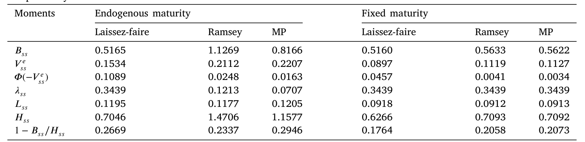
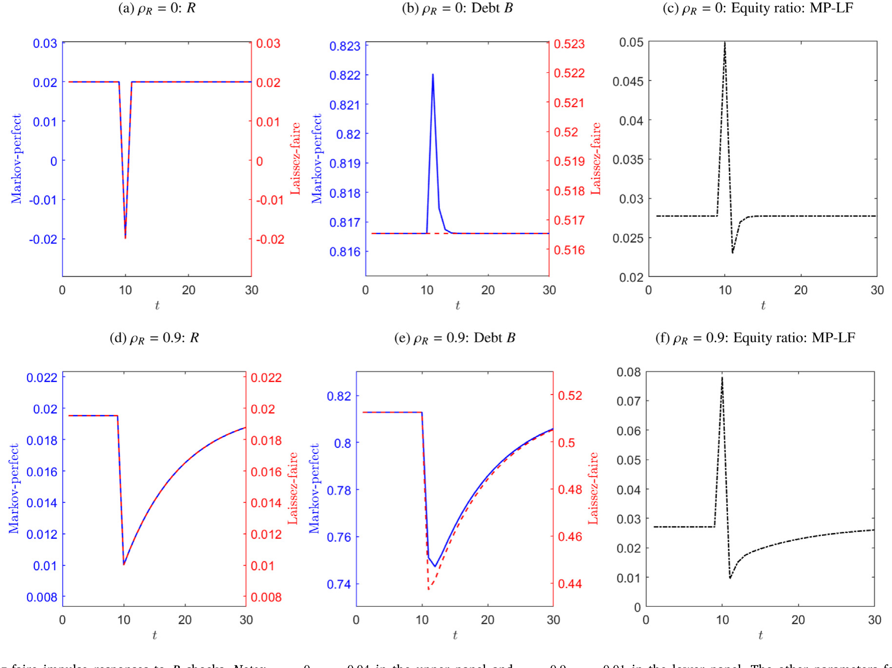
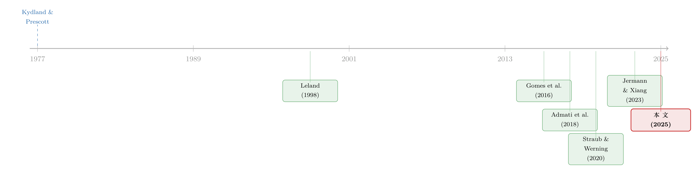

规则还是相机抉择？——给银行资本监管装上一根「承诺」的缰绳
本文读的是 Jermann & Xiang (2025, Journal of Financial Economics)：当银行存款是长期、且会违约的，资本监管者就天生患上一种「时间不一致」的毛病——今天信誓旦旦要管住杠杆，明天却忍不住放水。作者用一个动态模型证明了这个问题的存在，并给出一个反直觉的结论：能做出承诺的拉姆齐监管者，其稳态股权比率甚至可能比自由放任还低；面对衰退，它反而会把宽松「按住」更久。结论很硬——应当用一套系统性的规则去约束监管者的相机抉择。
1 一个被问反了的问题
我们习惯了这样一种叙事：银行天生爱加杠杆，监管者站在对面，举着资本充足率的尺子，管住它。故事里，有问题的是银行，监管者是解药。
巴塞尔 III 大体就是按这个逻辑搭起来的：法定资本充足率、留存资本缓冲 (conservation capital buffer, CCoB) 是写死的「规则」；而逆周期资本缓冲 (countercyclical capital buffer, CCyB) 则是一个可以由宏观审慎当局相机调整的「活扣」——经济过热时拧紧，衰退来临时放松。听上去很美：监管者能随机应变。
但只要你把镜头从银行身上挪开，对准监管者本人，一个让人不太舒服的问题就冒出来了:监管者自己，会不会也是个「言而无信」的人?
这并非杞人忧天。欧盟的资本要求指令 (Capital Requirements Directive, CRD IV) 早已嗅到了味道：它要求各国当局在调低 CCyB 时，必须公开说明「预计在多长时间内不会再调高」——本质上，是在用一纸承诺，捆住自己未来那只急于收紧的手。监管者为什么要主动给自己上枷锁？因为人们隐隐意识到，资本监管可能正落入那个经典的圈套——时间不一致 (time inconsistency)。
这正是 Jermann 和 Xiang 这篇论文的切入点。它做的，是「对资本监管的时间不一致问题的第一次正式分析」。
2 时间不一致：好政策为什么会「自己背叛自己」
先把概念讲清楚。Kydland 和 Prescott (1977) 那篇奠基之作告诉我们：只有当事前最优的政策是时间不一致的，相机抉择才会毁掉价值。 所谓时间不一致，是指一个在 t=0 时看来最优的承诺，到了 t=1，在新的约束下重新优化时，决策者会有动机偏离它——哪怕基本面什么都没变。
经典例子是专利与通胀。事前承诺「保护专利」能激励创新，可一旦发明出来，事后最优反而是「征用它、让大家免费用」。理性的发明者预见到这一点，于是干脆不投入。承诺的缺失，反噬了事前的最优。
那么，资本监管里这个「背叛」从何而来？论文给出的答案出人意料地干净：它源于存款的「长期性」与「可违约性」。
这是全文的题眼，值得反复咀嚼。如果银行的负债是一期到期的短债，那么旧债必须先还清、银行才能发新债——发债的全部成本与收益，发行人自己一肩挑了，没有外溢。可现实里美国银行的负债主体是活期与储蓄存款，它们没有明确的到期日，是天然的长期负债。一旦负债是长期的，今天发新债就会稀释 (dilution) 那些尚未收回的旧存款：新债摊薄了偿付，把旧债权人暴露在更高的违约风险下，旧存款的价值因此缩水。
关键的一步在于：长期存款的价值，是面向未来的。 既然今天的存款价值取决于「明天会不会被稀释」，那么明天的杠杆，就反过来决定了今天的存款值多少钱。于是「能否对未来的杠杆做出承诺」这件事，就实实在在地影响了「今天」。这条「未来→今天」的反向链条，就是整篇文章所有机锋的源头。
3 模型：把监管者的两难写成一个贝尔曼方程
这是一篇彻头彻尾的理论模型论文，我们就老老实实把它的骨架搭出来。所有变量里，小写是单家银行、大写是加总。
自由放任下的银行。 时间离散，所有人风险中性，利率为 r。每家银行资产产生利润 R + z，其中 z 是均值为零、支撑集为 \([-\bar z, \bar z]\) 的银行特质冲击。存款到期比例为 \(\lambda\)（于是久期为 \(1/\lambda\)；\(\lambda<1\) 即长期）。银行取存款定价表 q(B, b') 为给定，最大化股权价值：
$$ z+v^{e}(B,b)=z+\max_{b'}\Big\{R-\lambda b+q(B,b')\big[b'-(1-\lambda)b\big]+\frac{1}{r}\int_{-v^{e}(B',b')}^{\bar z}\big[v^{e}(B',b')+z'\big]\,d\Phi(z')\Big\} $$
直觉：股权价值 = 当期利润 R+z − 还到期存款 \(\lambda b\) + 发新存款所得 \(q[b'-(1-\lambda)b]\) + 延续价值。最后那个积分下限 \(-v^{e}(B',b')\) 是违约门槛——明天股权一旦为负，银行就一走了之（行使违约期权）。对应地，存款人的价值是
$$ v^{b}(B,b,q)=\big[\mu(B)+\lambda+q(1-\lambda)\big]b $$
其中 \(\mu(B)\) 是存款的流动性收益，并假设 \(\partial\mu/\partial B<0\)（流动性边际递减，这也保证了拉姆齐问题有界）。
稀释外部性。 把银行的目标 (1) 对 b' 求一阶条件，全文最重要的那个「裂缝」就显形了：
$$ q(B,b')+\big[b'-(1-\lambda)b\big]\frac{\partial q(B,b')}{\partial b'}+\big[1-\Phi(-v^{e}(B',b'))\big]\frac{1}{r}\frac{\partial v^{e}(B',b')}{\partial b'}=0 $$
第二项里藏着价格冲击 \(\partial q/\partial b'<0\)：多发存款会抬高明天的违约风险、压低今天的价格 q。但银行只为新发的那部分 \(b'-(1-\lambda)b\) 心疼这个价格冲击，却不为旧存款 \((1-\lambda)b\) 承担的那份价值损失负责——也就是被遗漏的稀释项 \(-(1-\lambda)b\,\partial q(B,b')/\partial b'\)。这是一个静态外部性：银行因此倾向于发出从社会角度看过多的存款。
监管者登场。 资本监管者关心的是经济体的总资源，即银行与存款人的价值之和。它要在自由放任的扭曲之上，把那块被银行忽略的旧存款价值 \(V^b\) 也算进账。一个马尔可夫完美 (Markov-perfect)、无法承诺的监管者，给定 B 求解：
而一个拉姆齐 (Ramsey)、能做出完全承诺的监管者，则要在 (5) 之外多背两个「辅助状态变量」——对昨日股权价值的承诺 \(V^{e}\) 与对存款价格的承诺 \(Q\)。它的连续问题写成递归形式为
$$ H(B,V^{e},Q)=\max_{B',V^{e\prime},Q'}\;R+\mu(B)B-\xi B\,\Phi(-V^{e})+\frac{1}{r}H(B',V^{e\prime},Q') $$
并受制于两条「承诺兑现 (promise-keeping)」约束（即上式中昨日许下的 \(V^e\)、\(Q\) 今天必须做实）：
$$ V^{e}=R-\lambda B+Q\big[B'-(1-\lambda)B\big]+\frac{1}{r}\Big[\int_{-V^{e\prime}}^{\bar z}(z'+V^{e\prime})\,d\Phi(z')\Big] $$
$$ QB'=\frac{1}{r}\Big\{\int_{-V^{e\prime}}^{\bar z}V^{b}(B',Q')\,d\Phi(z')+\int_{-\bar z}^{-V^{e\prime}}\big[z'+V^{e\prime}+V^{b}(B',Q')-\xi B'\big]\,d\Phi(z')\Big\} $$
两类监管者的差别，只在于承诺能力：拉姆齐被过去的承诺捆着，马尔可夫完美则每期都从零开始、面对的只有自然状态 B。论文进一步证明（Proposition 2），二者创造的总价值都能写成一个干净的会计式——拉姆齐为 \(H(B,V^{e},Q)=V^{e}+V^{b}(B,Q)-\xi B\,\Phi(-V^{e})\)，马尔可夫完美则把承诺变量替换成当期的策略函数。稳态政策的所有差别，都只反映承诺力的不同，别无其他。
4 反转：监管者的「病」，和银行的「病」恰好相反
到这里，自然要问：监管者的时间不一致，到底长什么样？
论文的做法很巧。它从马尔可夫完美监管者的稳态出发，只给它一次性的承诺机会——允许它对「明天的存款发行量」做一次承诺，然后证明：它有动机向上偏离。换句话说，一个不受过去约束的监管者，会系统性地选择偏低的杠杆。
为什么？因为「保留一些稀释」是有用的。今天保留一点稀释，会劝退今天的银行去违约（违约会让股权归零，得不偿失）；但更妙的是，它同时也劝退了昨天的银行去违约——因为长期存款的价值，昨天就已经因为「理性预期到今天会被稀释」而下调了，这反过来抬高了昨天那一刻的银行股权价值。对一个能承诺的监管者，这是一笔划算的买卖：通过承诺一个明天「过高」的存款量，今天的银行违约就减少了。可马尔可夫完美监管者享受不到这条「未来→今天」的好处，于是它对杠杆过分谨慎。
于是反转出现了。已有文献（如 Gomes et al., 2016; Admati et al., 2018 的「杠杆棘轮效应」）讲的是借款人的故事：借款人若能承诺少稀释一点，自己的福利会更高。而这篇论文把镜头换到监管者身上，得到的结论恰好镜像翻转——
社会福利的提升，要靠马尔可夫完美监管者能承诺「多稀释一点」。 借款人想承诺「少稀释」以自保；社会规划者却需要承诺「多稀释」来压住违约。同一个稀释，对两个主体是两副面孔。
（关于借款人这一侧「债务的两难」，可参见《债务这副药，为什么不能全吃？——重读 Jensen 和 Meckling 五十年》。）
5 量化：能承诺的监管者，反而「不怕」杠杆
光有定性的方向不够，论文随后数值求解了一个引入 非到期存款 (non-maturing deposits) 的扩展模型——这里存款没有明确到期日，每期当流动性冲击实现时，单个存款人自行决定是否付费提取，于是存款的久期由内生提取决定。这一步把模型拉近了现实：美国银行的负债，正是这种「想走随时走、但走有成本」的活期/储蓄存款。
两组核心结论：
第一，稳态的最优杠杆与违约风险，关键地取决于承诺。 因为能更好地用承诺去防违约，拉姆齐监管者在「流动性收益」与「违约损失」之间取得了更高效的权衡。一个反直觉的发现是：拉姆齐监管者下的稳态股权比率，甚至可能低于自由放任——这与典型的资本监管模型形成鲜明对照（在那些模型里，监管总是意味着「更高的资本、更低的杠杆」）。一句话概括作者的直觉：一个更有能力防止违约的监管者，反而更不怕背上杠杆。而内生提取会在数量上放大承诺的价值，因为承诺明天的杠杆，会额外作用于今天的提取行为。

Table 1: shows the deterministic steady states for laissez-faire
第二，承诺会带来更强的逆周期性。 面对一个负向生产率冲击，银行违约动机骤增。拉姆齐监管者不仅今天放松资本要求，还会承诺把这份宽松延续很久——这对在冲击当下化解违约极其有用。反观马尔可夫完美监管者：随着宽松很快开始意味着「风险太高」，它会迅速掉头收紧，宽松在生产率回归的过程中很快就显得不再最优。

Figure 3
这恰好给了 CRD IV 那条「调低后须承诺多久不再调高」的规定一个理论背书：限制监管者在调低 CCyB 后迅速回调的能力，确实能增强这一政策工具的有效性。 此外，作者还探讨了部分承诺：只要能对股权价值或存款价格之一做出承诺，就足以跨期对齐激励、达到与完全承诺相同的稳态结果。这意味着——「能否做出可信承诺」本身，远比「向银行还是向存款人承诺」更重要。
6 落到地面：存款久期与杠杆的「黏性」
最后，论文给了它的实证一脚。理论的可检验含义是：存款久期越长，杠杆动态越「持久」。 作者刻意挑了一批规模不太大、存款保险覆盖也不太高的银行——它们没有隐性/显性担保的强力庇护，所以存款确实承担违约风险、稀释才会成为一个真问题。
结果与理论吻合：在主要依赖活期与储蓄存款的银行中，那些金融素养较低的存款人占比更高的银行，杠杆动态更持久——因为「警觉的存款人」等于变相缩短了存款久期、约束了银行的稀释能力；而在主要依赖定期存款的银行中，定期存款的平均久期越长，杠杆也越持久。
这一节是相关性证据，意在为理论机制提供一个经验上的「指纹」，而非因果识别。论文正文未在此处给出可直接引用的回归系数与 t 值，我在此只忠实转述其方向，不杜撰具体量级。
（存款的流向与黏性如何在加总层面影响金融体系，这一主题也出现在《存款往哪儿流，比哪家银行倒下更重要》里。）
7 文献脉络
把这篇论文放回它生长的土壤，脉络其实相当清晰。
源头是 Kydland & Prescott (1977) 那条贯穿整个宏观的「规则 vs. 相机抉择」主线——时间不一致从此成为政策分析的底层语法。另一条线来自公司金融对长期可违约债务的刻画：Leland (1998) 把风险管理与资本结构、代理成本接到一起；到 Gomes et al. (2016) 与 Admati et al. (2018)，「黏性杠杆」与「杠杆棘轮效应」把借款人因缺乏承诺而自伤福利的机制讲透。

与此同时，宏观金融里评估宏观审慎（主要是资本要求）的文献蔚为大观——Repullo & Suarez (2013)、Malherbe (2020) 等讨论资本监管的顺周期与最优缓冲。但这些研究大多停在一期债务 + 政府补贴扭曲的框架里。这篇论文的位置就此凸显：它把长期债务与由此产生的股权—债务冲突（稀释）放进监管问题，并且第一次把承诺/时间不一致的问题，从借款人身上挪到了监管者身上。它还在技术上接上了最优税收文献里一个奇特现象——非平稳的拉格朗日乘子伴随平稳的实际变量（Straub & Werning, 2020），即拉姆齐配置的乘子未必收敛。这篇承接 Jermann & Xiang (2023) 的非到期存款建模，正坐落在这两条河流的交汇处。
评论与延伸（Q&A + 研究方向）
(a) 几个可能的疑问
Q：监管者的时间不一致，和银行/借款人的时间不一致，到底差在哪？
差在目标函数。借款人最大化自己的股权价值，其时间不一致表现为「事后想多稀释、自伤福利」，所以它希望能承诺少稀释。监管者最大化的是总资源（股权+存款），它的最优反而需要保留甚至加大稀释来压住违约——所以社会希望监管者能承诺多稀释。同一个稀释，方向恰好相反。
Q：为什么是「长期存款」制造了这个问题？短债不行吗？
不行。短债下旧债必须先还、再发新债，发行人内部化了全部成本收益，没有跨期外溢，监管也就不存在时间不一致。只有当存款长期、且可违约时，「明天的杠杆」才会通过理性预期反作用于「今天的存款价值」，承诺才开始有价值。
Q：「拉姆齐稳态股权比率可能低于自由放任」是不是说监管反而让银行更脆弱？
不是。降低股权比率不等于福利更差。能更好防违约的监管者，敢于用更高杠杆去多换流动性收益，是在更高效的「流动性—违约」边界上重新选点。脆弱性由违约风险衡量，而非杠杆水平本身。
Q：CRD IV 那条「调低后承诺多久不再调高」的规定，按本文是冗余还是有用？
取决于经济。若衰退后长期维持低 CCyB 本就最优，那么这条「前瞻指引」在理性预期下是冗余的、甚至束缚手脚；但本文的数值结果显示，马尔可夫完美监管者会过快收紧，因此约束这种过快回调确实能提升政策有效性——本文站在「有用」这一边。
Q：非平稳的拉格朗日乘子，会不会让结论站不住脚？
这是技术特征而非 bug。它呼应最优税收文献（Straub & Werning, 2020 等）里乘子不收敛、实际变量却平稳的现象。论文据此把问题拆成「初始问题 + 连续问题」来刻画拉姆齐解，结论建立在连续问题的递归结构上，是稳健的。
Q：实证那部分能支撑因果吗？
严格说不能。它给的是「存款久期↔杠杆持久性」的相关性指纹，靠样本选择（小银行、低存保覆盖、按存款人金融素养/定期存款久期分组）来逼近机制，但没有外生冲击或断点，识别仍是描述性的。
(b) 几个可能的研究问题与提案
1. 用一次外生的存款保险上限变动，识别「久期→杠杆持久性」。
【经济故事】本文机制的核心是「存款的有效久期」。存款保险上限一变，未保险存款人的警觉性与提取行为随之改变，等价于外生地改变了有效久期——正可检验杠杆动态是否随之变得更/更不持久。【可行性】中。需要 FDIC Call Reports 的银行—季度数据，叠加保险上限调整（如 2008 年由 10 万升至 25 万美元）做双重差分 (difference-in-differences, DiD)。难点在于上限变动是全国统一的，须借助各行未保险存款占比的横截面差异构造处理强度。
2. 把这套「监管者时间不一致」搬到公司债/信用市场的契约执行上。
【经济故事】本文强调「承诺股权价值或存款价格之一即可对齐激励」。在公司信用市场，财务契约 (covenant) 的事后豁免正是一种「监管者/债权人」的相机抉择，与本文同构。可问：债权人对契约执行的承诺力，如何影响借款企业的杠杆持久性？【可行性】中。需 DealScan 契约数据 + 契约违约后的豁免/重谈记录，识别靠贷款人异质性（关系型 vs. 交易型）。Xiang (2024) 关于契约与时间不一致的工作是天然接口。
3. 外资存款人/债权人会软化还是加剧这个问题？
【经济故事】外资持有人的提取行为、信息与警觉性可能与本土存款人系统性不同，从而改变「有效久期」这一关键变量。若外资更易在压力期撤离，等于缩短久期、压缩银行稀释空间——这会如何改写最优资本要求的逆周期性？【可行性】低到中。跨境银行负债的逐户数据稀缺，可退而用 BIS locational banking statistics 在国别层面做相关性分析，识别策略较弱，更适合作为机制性探索。
4. 把「监管复杂度」当作承诺技术来度量。
【经济故事】本文呼吁用「系统性框架」限制监管者的相机抉择。一个自然的实证对应物是：规则越复杂/越「写死」，是否等价于更强的承诺、从而带来更逆周期的资本缓冲？【可行性】中。可借鉴把监管文本量化为复杂度指标的思路（参见《把监管写成一段代码：当「复杂」第一次有了可以测量的刻度》），与各国 CCyB 调整频率/幅度做面板回归。
5. 在结构模型里反推「最优承诺技术」的福利价值。
【经济故事】本文显示部分承诺即可达到完全承诺的稳态。那么，现实中各类「半承诺」制度（前瞻指引、规则化缓冲、立法约束）各值多少福利？【可行性】中。可在本文的非到期存款框架上，加入对承诺技术的连续刻画，校准到美国银行业数据，做反事实福利比较。纯结构工作，doable，但对求解时间一致均衡的算法要求较高（如 Dennis, 2022 的扰动法）。
我的判断
这篇论文最漂亮的地方，是把一个看似纯技术的观察——「存款是长期的、可违约的」——一路推到一个干净且反直觉的政策命题：有问题的可能不只是银行，还有监管者自己；而治它的药，是承诺，不是更多的相机抉择。 把「时间不一致」从借款人挪到监管者，并指出二者方向相反（社会要监管者「多稀释」而非「少稀释」），是真正的概念性贡献。Proposition 2 那条把总价值写成 \(V^e+V^b-\xi B\Phi(-V^e)\) 的会计式，以及「承诺股权价值或存款价格之一即足够」的结论，都干净得让人信服。
对识别的担忧主要落在实证与校准两侧。实证部分是相关性指纹，把「金融素养」「定期存款久期」当作有效久期的代理，链条偏长、易受遗漏变量干扰；它能说明方向，但撑不起因果。而稳态那个最惊人的结论——「拉姆齐股权比率可能低于自由放任」——对参数（尤其是重组损失率 \(\xi\)、流动性收益 \(\mu(B)\) 的斜率、冲击分布 \(\Phi\)）的依赖有多强，值得在论文之外再压力测试一番。
后续我最想看到两件事：其一，把这套框架接到真实的 CCyB 调整数据上，检验「承诺更强 → 更逆周期」的可观测含义；其二，引入外资存款人/债权人这一维度——他们的提取行为很可能系统性地改写「有效久期」，而这正是整篇论文转动的那根轴。
参考文献
- Admati, A.R., DeMarzo, P.M., Hellwig, M.F., Pfleiderer, P. (2018). The leverage ratchet effect. Journal of Finance 73.
- Gomes, J., Jermann, U., Schmid, L. (2016). Sticky leverage. American Economic Review 106.
- Jermann, U., Xiang, H. (2023). Dynamic banking with non-maturing deposits. Working paper.
- Jermann, U., Xiang, H. (2025). Rules versus discretion in capital regulation. Journal of Financial Economics 169, 104060.
- Kydland, F.E., Prescott, E.C. (1977). Rules rather than discretion: The inconsistency of optimal plans. Journal of Political Economy 85.
- Leland, H.E. (1998). Agency costs, risk management, and capital structure. Journal of Finance 53.
- Malherbe, F. (2020). Optimal capital requirements over the business and financial cycles. American Economic Journal: Macroeconomics 12.
- Repullo, R., Suarez, J. (2013). The procyclical effects of bank capital regulation. Review of Financial Studies 26.
- Straub, L., Werning, I. (2020). Positive long-run capital taxation: Chamley–Judd revisited. American Economic Review 110.
- Xiang, H. (2024). Time inconsistency and financial covenants. Management Science 70.